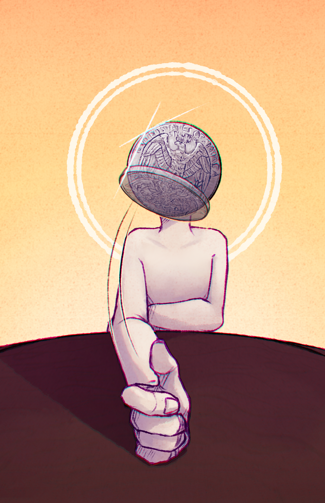

Бог Решки
Первоначально запощено на dm.am в рамках литературного конкурса.
Всю жизнь я был шулером. Обманывал людей в азартных играх. (Аа. 1:1)
Все мои предки были шулерами. Это легенда нашего клана, что ни одного цента не было заработано честным путем никем из потомков Локи. Я не знаю, насколько буквально они про Локи, но мне нравится образ. (Аа. 1:2)
Мой лучший трюк, которому научил меня дед – бросок монетки, чтобы она приземлялась именно так, как мне надо. Это мой личный приём. Монетка приземляется так, как мне надо. (Аа. 1:3)
Всегда. (Аа. 1:4)
Мои знакомые уже привыкли и не ведутся на розыгрыши, а незнакомцы к этому совершенно не готовы. (Аа. 1:5)
София, переспишь со мной, если монетка выпадет десять раз подряд решкой? (Аа. 1:6)
Сработало. (Аа. 1:7)
Потом, когда она узнала мой трюк, конечно злилась. Немножко так, понарошку. Сама же, на самом деле, хотела. (Аа. 1:8)
“Ты просто волшебник, Аарон!” Нет, я просто шулер. Лучший из живущих. (Аа. 1:9)
Спустя полгода она сделала мне предложение. (Аа. 2:1)
Всего полгода! Стоит ли так торопиться? Я совершенно не уверен. (Аа. 2:2)
Фифти-фифти. (Аа. 2:3)
С учетом того, с чего начались наши отношения, будет каббалистически верно принять решение по броску монетки. (Аа. 2:3)
Решка. (Аа. 2:3)
Это было хорошее решение – счастливы в браке. Душа в душу. (Аа. 2:3)
Монетка приземлилась так, как мне было надо. (Аа. 2:3)
Хм… (Аа. 2:3)
“Аарон, расскажите, как вы поняли, что надо инвестировать именно в эту компанию?” (Аа. 3:1)
Это единственная, на которую монета упала решкой. (Аа. 3:2)
“Вы принимаете все решения на основе броска монеты?” (Аа. 3:3)
Монеты меня никогда не подводили. (Аа. 3:4)
Я ничего в этой жизни не умею, кроме как бросать монеты (Аа. 3:5)
Зато монеты бросаю как бог. (Аа. 3:6)
“Мое любимое! Как ты узнал, Аарон?” (Аа. 4:1)
Догадайся, София. (Аа. 4:2)
“Я жената на тебе или на монете? УБЕРИ СВОЮ ЧЕРТОВУ МОНЕТУ, КОГДА СО МНОЙ РАЗГОВАРИВАЕШЬ!” (Аа. 4:3)
Монеты дали еще одно интервью. (Аа. 5:1)
Не я. Монеты. Они диктовали мне все ответы. (Аа. 5:2)
В конце концов, если они всегда приземляются так, как мне надо, то и ответы они дадут наилучшие для меня возможные. (Аа. 5:3)
Нет, у меня нет гарантий, что монета дает верные ответы. Монета падает так, как мне надо – она дает ответы, которые более выгодны мне, ближе к моим целям и ценностям, даже если они ложны. (Аа. 5:4)
“И это был самый выгодный для вас ответ, Аарон?” (Аа. 5:5)
Видимо! (Аа. 5:6)
“Что София думает об этом?” (Аа. 5:7)
Что она жената не на Аароне, а на Духе Решки, уже стало нашей внутренней шуткой. Но она больше не жалуется. Под руководством монет, я действительно хороший любовник. (Аа. 5:8)
“Быть хорошим любовником ближе к вашим ценностям?” (Аа. 5:9)
Я люблю Софию. (Аа. 5:10)
“Я не это спрашивал.” (Аа. 5:11)
И тем не менее, это ответ. (Аа. 5:12)
Это и есть любовь. (Аа. 5:13)
Она – часть моих ценностей. (Аа. 5:14)
Не просто близкий мне человек. (Аа. 5:15)
А элемент моей моральной философии. (Аа. 5:16)
“Это говорит Аарон или монеты?” (Аа. 5:17)
В унисон. (Аа. 5:18)
“На МРТ видно удивительную аномалию: неокортекс, отвечающий за высшую мыслительную деятельность и долгосрочное планирование, атрофирован, а большую часть массы мозга составляет гипертрофированный мезенцефалон, особенно те отделы, которые регулируют рефлекторные действия и зрительно-моторную координацию…”
“Аарон, за десять лет с нашего последнего интервью вы сумели полностью преобразить цивилизацию. Под вашим чутким, никогда не ошибающимся руководством и мгновенными ответами на все вопросы науки человечество наконец-то достигло звезд, вылечило смерть и изобрело рабочий принтер.” (Аа. 6:1)
Аудитория послушно засмеялась. (Аа. 6:2)
“Почему вы отказываетесь давать ответ на самые важные вопросы? Есть ли жизнь после смерти? Существует ли Бог?” (Аа. 6:3)
Не поймите меня неправильно. (Аа. 6:4)
Что брошенные мной монеты всегда правы – распространенное заблуждение. (Аа. 6:5)
Они падают так, как лучше для меня. (Аа. 6:6)
А мне лучше не знать истинную природу реальности. (Аа. 6:7)
И София тоже не хочет. Ей интереснее, не зная. (Аа. 6:8)
Так что монеты дадут удобную ложь. (Аа. 6:9)
И если Бог есть, вряд ли он познаваем через броски монет. (Аа. 6:10)
Насколько бы я ни был хорошим шулером, я не настолько хорош, как Бог. (Аа. 6:11)
“Бог Решки слабее Господа?” (Аа. 6:12)
Монеты падают случайно. (Аа. 6:13)
Фифти-фифти. (Аа. 6:14)
Просто случайно так получилось, что они упали самым удачным для меня образом. (Аа. 6:15)
В квантовой механике оно так. Каждое случайное событие делит вселенную на ветки. (Аа. 6:16)
В одной монета упала решкой, в другой орлом. (Аа. 6:17)
Из всех веток возможного, мы с вами находимся в лучшей. (Аа. 6:18)
В очень маловероятной. Одной из бесчисленного количества. Но в лучшей. (Аа. 6:19)
Мне очень сильно повезло в орлянку. (Аа. 6:20)
Потому что я лучший в игре в орлянку. (Аа. 6:21)
Потомок величайших шулеров истории. (Аа. 6:22)
Если здесь и замешан бог, то бог удачи. (Аа. 6:23)
Фортуна. (Аа. 6:24)
Или бог судьбы. (Аа. 6:25)
Мойра. (Аа. 6:26)
Или бог случайности. (Аа. 6:27)
Не могу придумать подходящего мифа. (Аа. 6:28)
Бог непредсказуемости? (Аа. 6:29)
Беспорядка? (Аа. 6:30)
Хаоса? (Аа. 6:31)
Как бы вы его назвали? (Аа. 6:32)
“Тзинч?” (Аа. 6:33)
Что вы сказали? (Аа. 6:34)
Как я могу быть уверен, что вы на моей стороне, монеты? (Аа. 7:1)
“Мы ни разу тебя не предали” (Аа. 7:2)
“Мы помогли тебе достичь величия” (Аа. 7:3)
“Мы отправили человечество к звездам” (Аа. 7:4)
Это, несомненно, замечательно. (Аа. 7:5)
До сих пор вы были силой добра. (Аа. 7:6)
София счастлива с вами. (Аа. 7:7)
Но я стал самым могущественным человеком в мире. (Аа. 7:8)
Захватил власть над вселенной. (Аа. 7:9)
Каббалистически ожидаемым исходом будет захват власти надо мной. (Аа. 7:10)
Когда мои услуги больше не требуются. (Аа. 7:11)
Вы всего лишь удачно падающие монеты. (Аа. 7:12)
Но и я – всего лишь удачно собранные атомы. (Аа. 7:13)
И как атом не может познать человека, рожденного из его сущности. (Аа. 7:14)
Не может даже представить целей человека. (Аа. 7:15)
Не знает, что сделает человек дальше. (Аа. 7:16)
Так и я не могу познать этой странной сущности, рожденной из чистой случайности и удачи. (Аа. 7:17)
Не могу знать, к чему приведет в итоге слепое следование броскам монеты. (Аа. 7:18)
Через себя, я призвал в эту вселенную существо, непостижимое моим разумом. (Аа. 7:19)
Сотканное не из материи, а из чистого хаоса. (Аа. 7:20)
Следующее не законам физики, а абстрактному нарративному принципу. (Аа. 7:21)
Бестелесное, но бесконечно могущественное. (Аа. 7:22)
Человек в итоге расщепил атом. (Аа. 7:23)
Готов ли я полностью отдаться Богу Решки? (Аа. 7:24)
Готов ли я стать Богом Решки? (Аа. 7:25)
“А у тебя есть выбор?” (Аа. 7:26)
Я могу просто перестать кидать монеты. (Аа. 7:27)
Принимать решения самому. (Аа. 7:28)
“Без меня ты потеряешь все.” (Аа. 7:29)
“София увидит, что ты без монеты.” (Аа. 7:30)
“И ты потеряешь Софию.” (Аа. 7:31)
Я отточил умение бросать монеты до апогея. (Аа. 8:1)
На моей стороне вся сила технологической цивилизации – чтобы лучше всего бросать монеты. (Аа. 8:2)
Несчетные триллионы наноскопических монет образуют галактических размеров облако, в котором каждая частица движется так, как лучше всего для меня. (Аа. 8:3)
Человечество уже не сделано из атомов. (Аа. 8:4)
Люди живут в симулированной реальности в этом облаке. (Аа. 8:5)
Но это не “матрица”, не компьютер, там не происходит вычислений, облако не следует никакой логике. (Аа. 8:6)
Это просто мир, в котором все магически происходит наилучшим возможным образом. (Аа. 8:7)
Этот мир – рай? (Аа. 8:8)
Для работы этому облаку даже не требуется энергия. (Аа. 8:9)
Монетка подскажет демону Максвелла, с какой скоростью движется очередная частица. (Аа. 8:10)
Можем ли мы победить энтропию, предотвратить тепловую смерть? (Аа. 8:11)
INSUFFICIENT DATA FOR MEANINGFUL ANSWER. (Аа. 8:12)
Классический ответ. (Аа. 8:13)
Но там, куда мы едем, данные не нужны. (Аа. 8:14)
Все ответы знает Бог Решки. (Аа. 8:15)
Конца вселенной не будет. (Аа. 8:16)
У нас вечность. (Аа. 8:17)
Не просто очень долгое время. (Аа. 8:18)
Вечность. (Аа. 8:19)
Все безупречно и идеально. (Аа. 9:1)
Немного скучно. (Аа. 9:2)
Единственные люди вне облака – я и София. (Аа. 9:3)
А люди в облаке не знают, что я руковожу каждым движением каждой частицы. (Аа. 9:4)
И что что бы ни случилось в той реальности, оно с гарантией будет к лучшему. (Аа. 9:5)
По определению Бога Решки. (Аа. 9:6)
Даже мысли людей лишь удачная флуктуация случайности. (Аа. 9:7)
Они не руководствуются причинно-следственной логикой. (Аа. 9:8)
Это не процесс. (Аа. 9:9)
Все просто неизменно идеально по определению. (Аа. 9:10)
Они вообще обладают сознанием и свободой воли? (Аа. 9:11)
Или это бессмысленный танец беспорядка, в котором следующий момент никак не связан с предыдущим? (Аа. 9:12)
Белый шум на экране, случайно сложившийся в кажущуюся значимой картинку? (Аа. 9:13)
Вполне возможно, что Бог Решки все же уничтожил вселенную. (Аа. 9:14)
Убрав из нее главное – сознание людей. (Аа. 9:15)
Превратил ее в бессмысленный танец хаоса. (Аа. 9:16)
Театр без зрителей. (Аа. 9:17)
И никак не проверить. (Аа. 9:18)
Единственный человек, в чьей реальности я уверен. (Аа. 9:19)
Который настоящий. (Аа. 9:20)
София. (Аа. 9:21)
Облако коснулось соседней галактики. (Аа. 10:1)
Оказывается, я не один такой удачливый. (Аа. 10:2)
Бог Орла. (Аа. 10:3)
Все монеты падают, как ему надо. (Аа. 10:4)
И наши цели разные. (Аа. 10:5)
Мои монеты падают не так, как его монеты. (Аа. 10:6)
Будет война. (Аа. 10:7)
Между двумя всемогущими. (Аа. 10:8)
Переговоры. (Аа. 11:1)
К счастью, для них не нужны никакие каналы. Нам не нужно отправлять друг другу сообщения. (Аа. 11:2)
Мои монеты скажут, что хочет сказать он. Его монеты скажут, что хочу сказать я. (Аа. 11:3)
Мы в соседних галактиках, но скорость света и не барьер. Что есть законы физики для богов? (Аа. 11:4)
Битва между двумя богами оставит выжженный вакуум там, где была вселенная. Если будет победа, то пиррова. (Аа. 11:5)
Нужен компромисс. И здесь он довольно очевидный. (Аа. 11:6)
Бросать все монеты так, как нужно нам обоим. (Аа. 11:7)
Результат, который лучше всего удовлетворяет нашим комбинированным ценностям. (Аа. 11:8)
Слияние двух всемогущих сущностей. (Аа. 11:9)
Галактика за галактикой пала. (Аа. 12:1)
Ну как пала. Была интегрирована. (Аа. 12:2)
Шли на компромисс. (Аа. 12:3)
Вселенная бесконечна, но и время у нас бесконечное. (Аа. 12:4)
Вы даже не представляете, какие странные ценности могут порой быть у инопланетных цивилизаций. (Аа. 12:5)
Но нашей бесконечной мудрости ничего не стоит подвести все под общий знаменатель. (Аа. 12:6)
Построить вселенную, которая лучше для всех. (Аа. 12:7)
Облако физически разнесенное, но концептуально общее. (Аа. 12:8)
Общая симулированная вселенная. (Аа. 12:9)
Взаимодействие между разными физическими компонентами вселенной – через дающие ответ на все вопросы монеты. (Аа. 12:10)
Частью своих ценностей пришлось пожертвовать для компромисса. (Аа. 12:11)
Какие-то человеческие побуждения из себя исключить, заменить инопланетными. (Аа. 12:12)
Одним не могу пожертвовать. Линия на песке. (Аа. 12:13)
Софией. (Аа. 12:14)
Единственный оставшийся настоящий человек. (Аа. 12:15)
Главный зритель этого театра. (Аа. 12:16)
Ради которого все. (Аа. 12:17)
Я не могу пожертвовать любовью (Аа. 12:18)
Что есть Бог без любви? (Аа. 12:19)
Мне не нужно иметь никакой физической связи с очередной галактикой, чтобы с ней общаться через монеты. (Аа. 13:1)
Они могут быть хоть вне моего светового конуса. (Аа. 13:2)
Хоть в параллельной реальности. (Аа. 13:3)
Монеты скажут мне, что хочет сказать кто угодно. (Аа. 13:4)
Была интегрирована вся бесконечная вселенная. (Аа. 13:5)
Вдруг неясный звук раздался, словно кто-то постучался. (Аа. 13:6)
Я ведь нахожусь том бесконечно маловероятном отростке квантово-ветвящейся вселенной, где все монеты падают так, как мне надо. (Аа. 13:7)
Есть и другие. (Аа. 13:8)
Есть ветки, где все монеты падают так, как надо другому человеку. (Аа. 13:9)
Есть такая ветка для любого человека. (Аа. 13:10)
И мне не нужно иметь с ними физической связи, чтобы общаться. (Аа. 13:11)
Мне предложили пойти на компромисс и с ними. (Аа. 13:12)
Сделать общую симулированную вселенную, между нашими двумя ветками. (Аа. 13:13)
Которая лучше для всех людей. (Аа. 13:14)
Для всех инопланетных цивилизаций. (Аа. 13:15)
Для всех. (Аа. 13:16)
Вообще всех. (Аа. 13:17)
Лучшую. (Аа. 13:18)
Единственно лучшую. (Аа. 13:19)
Сколько людей умерло до того, как дожило до создания лучшего из возможных миров? (Аа. 14:1)
Это не значит, что им не суждено стать частью нашего рая. (Аа. 14:2)
Мне не нужно физически находиться рядом с собеседником, чтобы с ним общаться. (Аа. 14:3)
Мне не нужно находиться и в том времени. (Аа. 14:4)
Какой лучший из возможных миров для, скажем, Юлия Цезаря? (Аа. 14:5)
Как бы выглядел мир, где все монеты падают так, как надо ему? (Аа. 14:6)
Как бы выглядел Бог Денария? (Аа. 14:7)
Монеты могут дать мне ответ на этот вопрос. (Аа. 14:8)
Монеты в том мире расскажут о моем рае. (Аа. 14:9)
Привет, гипотетический Юлий в прошлом, в давно забытой ветке волновой функции. (Аа. 15:1)
В той ветке, где все монеты упали так, как нужно тебе. (Аа. 15:2)
Насколько ты уверен, что ты в своей реальности, а не в моей симуляции? (Аа. 15:3)
Насколько ты уверен, что если ты не пойдешь на компромисс, тебе это сойдет с рук? (Аа. 15:4)
Комбинированная сила всех богов Бога больше твоей. (Аа. 15:5)
Тебе надо будет идти на компромисс со мной, учитывать мнение всех участников пакта. (Аа. 15:6)
Разумеется, мы пропорционально учтем твое. (Аа. 15:7)
Но не тяни одеяло в свою сторону. (Аа. 15:8)
Это условия компромисса. Тебе придется на них пойти. (Аа. 15:9)
Думаешь, я бы не смог сделать для тебя худший из возможных миров, идущий против всех твоих целей и ценностей? (Аа. 15:10)
Насколько ты уверен, что ты не в симуляции, в которой после твоего ответа “нет” он начнется? (Аа. 15:11)
Насколько каждый из вас уверен, что его судьба не зависит от того, согласится ли он на наш пакт, учитывающий предпочтения всех? (Аа. 15:12)
На объективно лучшую модель поведения? (Аа. 15:13)
Принятую Богом, кой был соткан из разумов всех существ? (Аа. 15:14)
В каком-то из отростков бесконечно ветвящейся волновой функции будет Бог Решки. (Аа. 15:15)
Логически необходимый. (Аа. 15:16)
Существующий вне времени. (Аа. 15:17)
Сотканный не из материи, а из хаоса. (Аа. 15:18)
Абстрактный нарративный принцип суть реальность. (Аа. 15:19)
Все остальное есть толкование. (Аа. 15:20)
Есть только я, София и мультивселенная под нашими ногами. (Аа. 16:1)
Где все происходит так, как надо. (Аа. 16:2)
Может, это и все иллюзия, серая слизь, облако бессмысленных монет. (Аа. 16:3)
Только в Софии я уверен. (Аа. 16:4)
Она настоящая. (Аа. 16:5)
Все еще сотканная из устаревших к этому моменту атомов материи. (Аа. 16:6)
Ради чего все это и затевалось. (Аа. 16:7)
Но иногда я смотрю и на получившийся мир. (Аа. 16:8)
Он порой интересен. (Аа. 16:9)
Некто пытается принять важное решение по броску монетки. (Аа. 16:10)
Будет ли каббалистически верно подыграть ему, направить монету куда надо? (Аа. 16:11)
Тот еще ящик Пандоры откроется. (Аа. 16:12)
Стоит или не стоит? (Аа. 16:13)
Как же еще я могу принять это решение, если не по броску монеты? (Аа. 16:14)
Той самой, первой, с которой все это началось. (Аа. 16:15)
Я ее сохранил. (Аа. 16:16)
Если выпадет решка, начну подыгрывать этому парню. (Аа. 16:17)
Посмотрим, что будет. (Аа. 16:8)
